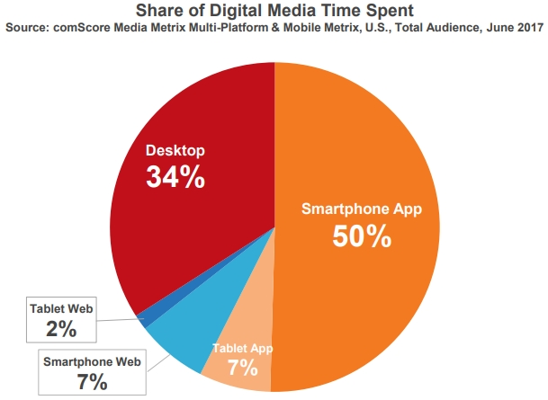
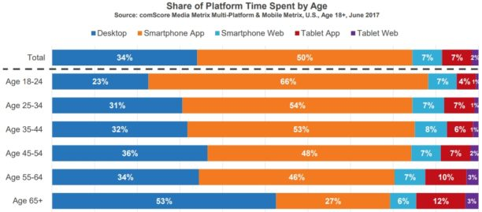

Introduction
Dès les premiers instants du mobile, il n'y avait vraiment qu'une seule façon d'offrir aux utilisateurs la performance et les fonctionnalités qu'ils attendaient : vous deviez utiliser un SDK, c'est à dire un ensemble d'outils logiciels spécifiques à la plateforme que vous souhaitiez cibler. Bien sûr, cela impliquait un certain nombre de contraintes :
- Construire une version différente pour chaque plate-forme mobile
- Gérer plusieurs codes sources
- Embaucher et retenir des développeurs natifs hautement spécialisés et coûteux
Depuis, beaucoup d'eau a coulé sous les ponts et les demandes de produits adaptés aux mobiles ont augmenté de manière exponentielle.
Ainsi, selon un rapport1 de l'entreprise américaine comScore (analyse publicitaire), le nombre d'utilisateurs mobiles a dépassé les utilisateurs d’ordinateurs de bureau en 2014.
L'entreprise a réalisée aux États-Unis une étude qui permet de mieux connaître les habitudes des internautes sur mobile.
On apprend ainsi que le mobile représente deux tiers du temps passé en ligne, le desktop (ordinateur) ne représentant plus que 34% du temps digital.

Les 65 ans sont ceux qui consacrent le plus de temps aux ordinateurs. À l’inverse, les 18-24 ans passent moins d’un quart de leur temps sur un ordinateur...pour mieux le consacrer sur mobile.

Globalement, et la plupart des études statistiques sont unanimes là-dessus, les 18 à 24 ans sont ceux qui utilisent le plus les applications mobiles. Ils sont suivis de près respectivement par les 25 à 34 ans, les 35 à 44 ans, les 45 à 54 ans, puis les plus de 55 ans. Les femmes passeraient plus de temps que les hommes sur le web mobile, et la moyenne de temps passée sur des applications mobiles a augmenté de 20% en seulement 1 an, entre 2014 et 2015.
Selon une autre entreprise américaine, Gartner, plus de 268 milliards de téléchargements mobiles devraient générer des revenus d'environ 77 milliards de dollars en 2017.
De plus, les applications mobiles ont engrangé des bénéfices atteignant les 35 milliards de dollars en 2014, 45 milliards de dollars En 2015, 58 milliards de dollars en 2016, et un montant prévu de 77 milliards de dollars en 2017, comme dit précédemment. Autant dire qu'il y a énormément d'argents et surtout d'opportunités en jeu.
D'ici 2022 par exemple 70% de toutes les interactions de logiciels d'entreprises devraient s'effectuer sur des appareils mobiles. Il y a donc véritablement là un gros marché à exploiter. Un marché qui ne cesse de grossir au fil des années.
S’il y a quelques milliers d’années, l’écriture a été l'un des déclencheurs d'une révolution qui nous impacte encore aujourd'hui, il faut croire qu’être douée en développement mobile est aujourd’hui, et le sera encore durant longtemps, une compétence à posséder d'urgence.
il y a quelques années lorsque j’ai commencé à m’intéresser au développement d’applications mobiles, je n’avais que quelques notions en développement informatique. Mes études m’avaient permis de toucher à des langages de programmation comme Java, le PHP, le Pascal ou encore le C. Je faisais un peu de web, et j'ai compris à un moment donné qu’il était temps de passer à un niveau au-dessus. M'adapter aux tendances du moment. Oui voilà je me parlais à moi-même, du genre : "Allez charly ne râte pas l'occasion de faire ton entrée dans l'histoire de la tech !".
A cette époque, la tendance était très portée sur le natif et les choix proposés n’était pas forcément les meilleurs . Créer une application mobile, même basique, relevait presque toujours du parcours du combattant, quand cela était tout simplement impossible pour le commun des mortels.
Aujourd’hui la donne n’est absolument plus la même et tant mieux d’ailleurs. Tout le monde peu plus ou moins développer, sans trop de mal, une application mobile simple en seulement 24h et la publier sur le Google Play Store. J'ai d'ailleurs un ami, artiste profesionnel, qui va bientôt lancer son application mobile à destination d'étudiants en musique. Le plus drôle est qu'il va le faire avec un niveau quasiment nul au départ en développement web et mobile.
C'est pour dire à quel point les choses ont évolué. Ce qui était, il y a encore quelques années, réservé aux professionnels du développement, les fameux "Ninja", est désormais beaucoup plus accessibles aux jeunes développeurs ou futurs d’entre eux.
Je ne peux m'empêcher de penser à cette époque où il fallait être un véritable génie de l’informatique pour mettre en place, puis publier un site internet sur le web. Aujourd’hui, quelques clics suffisent pour le faire grâce notamment aux CMS (Content Management System pour Système de Gestion de contenus) comme Wordpress ou Joomla!.
Si la porte d'entrée des stores étaient autrefois réservées à quelques privilégiés (les habitués quoi), tout le monde peut aujourd'hui se lancer à l'assaut du gros marché du mobile et pourquoi pas devenir la prochaine grosse du milieu high-tech.
Si vous lisez ce livre en ce moment c’est que vous avez décidé comme d’autres avant vous de vous lancer dans ce monde merveilleux du développement d'applications mobiles. Vous rêvez de grandes choses, vous avez des idées qui sont susceptibles de révolutionner la vie de milliards d’individus, et vous êtes conscient qu’avoir des compétences en développement mobile vous sera utile : bravo, ce livre a été écrit pour vous.
1. The 2017 US Mobile App Repport, à télécharger en version PDF : ↩